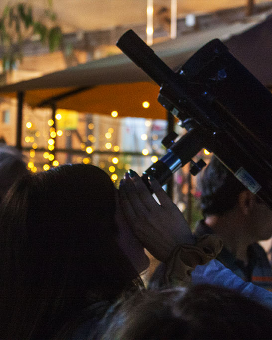
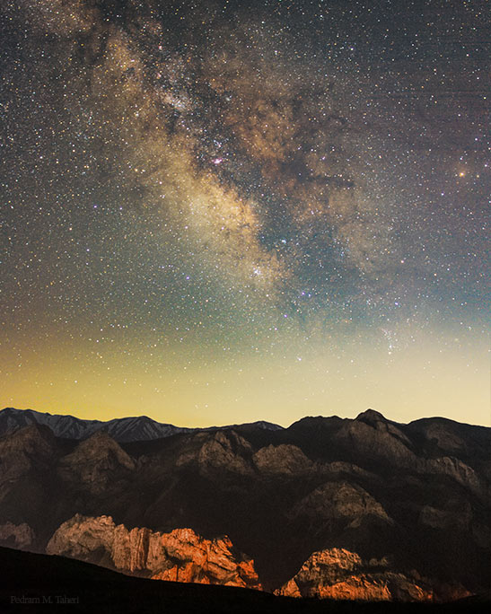
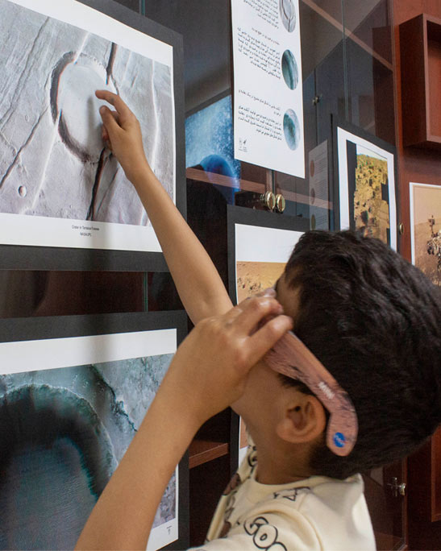

تلاشی جمعی برای ترویج دانش نجوم و کاوشی در آسمان شب و طبیتِ گیتی



رویدادهای نجومی نزدیک — بارشهای شهابی، ماهگرفتگیها — و گزارشهای تازهی گروه.
کاوش توسط دو منجم آماتور و رصدگر آسمان شب بنیانگذاری شده است. هدف این گروه ترویج دانش نجوم و به اشتراک گذاشتن زیباییهای آسمان و پژوهشهای علمی است.
هر گشت بسته به موقعیت، فاز ماه و هدف شب (سیارات، کهکشانها یا رویدادهای فصلی) با یکی از این سه برنامه اجرا میشه.
رصد سریع ماه و سیارات برای تازهواردها، همراه با معرفی صورتهای فلکی با پلانیاسفر کاوش.
رصد عمقی کهکشانها و خوشههای ستارهای دور از آلودگی نوری شهر، با تلسکوپهای گروه.
بارشهای شهابی، ماهگرفتگی و دیگر رویدادهای نجومی فصلی، برنامهریزیشده پیش از هر رویداد.
پلانیاسفر فارسی برای شناخت صورتهای فلکی در هر شب از سال، بدون نیاز به تلسکوپ
مبانی نجوم آماتوری و رصد، بهصورت آنلاین و بدون نیاز به حضور در تهران یا دماوند
مبانی عکاسی از آسمان شب، از تنظیمات دوربین تا فریمبندی
تهران و دماوند — جزئیات هر رصد پیش از برگزاری در اینستاگرام اعلام میشود